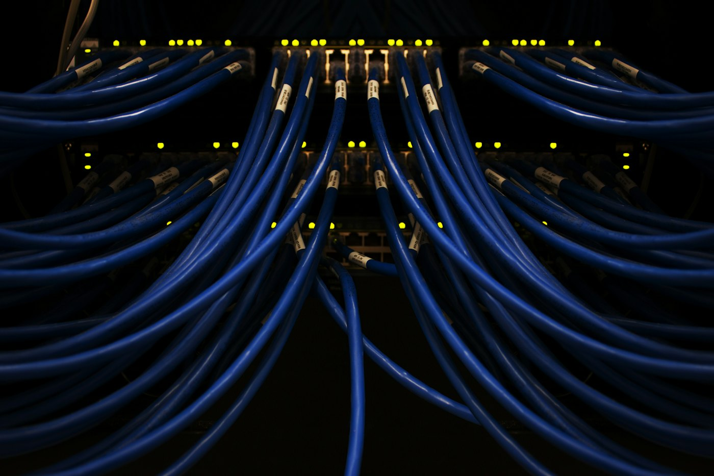

DWDM network planning & design
Optical network design that carries more capacity over your fibre.

Proven across major DWDM platforms
We plan and design DWDM networks, and we have hands-on experience with the platforms used in carrier networks.
Our team has delivered DWDM infrastructure for more than 15,000 km.
Enquire about DWDM designAny vendor, any equipment
We design networks with any vendor's devices, so the design fits your network rather than the other way round. We have hands-on experience with:
Technical approach
Channel plan. DWDM carries many wavelengths on one fibre pair. We plan on the ITU-T G.694.1 grid: 100 GHz or 50 GHz fixed spacing, or flexible-grid for higher-rate coherent channels. In the C-band (about 1530 to 1565 nm), 50 GHz spacing gives up to 96 channels.
Line system. Amplification with EDFAs, with Raman amplification added on long or high-loss spans, and ROADMs where wavelengths need to be added, dropped or re-routed remotely.
Coherent transmission. Modern 100G, 200G, 400G and 800G coherent transponders trade reach against capacity. We match the modulation and rate to the span length and the required margin.
Link budget and OSNR. For each design we check per-span loss and the optical signal-to-noise ratio (OSNR) at the receiver, with margin for ageing, repairs and tolerances. Try it in our DWDM link budget calculator.
Protection and resilience. Optical line protection, 1+1 client protection, and mesh restoration, designed together with the diverse fibre routes underneath.
Transport layer. Client signals mapped to OTN (ITU-T G.709) for monitoring and forward error correction, with latency and timing considered for each service.
What you receive
- Network topology and channel plan
- Span loss and OSNR budgets
- Equipment configuration and bill of materials
- Rack and power layouts
- Protection scheme design
- Commissioning and acceptance test plan